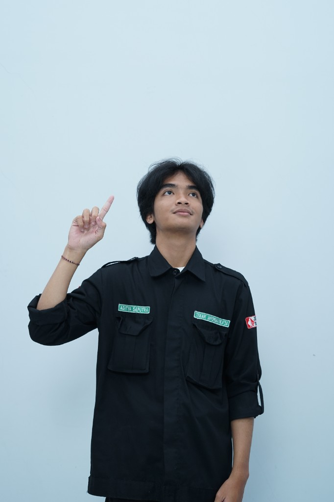
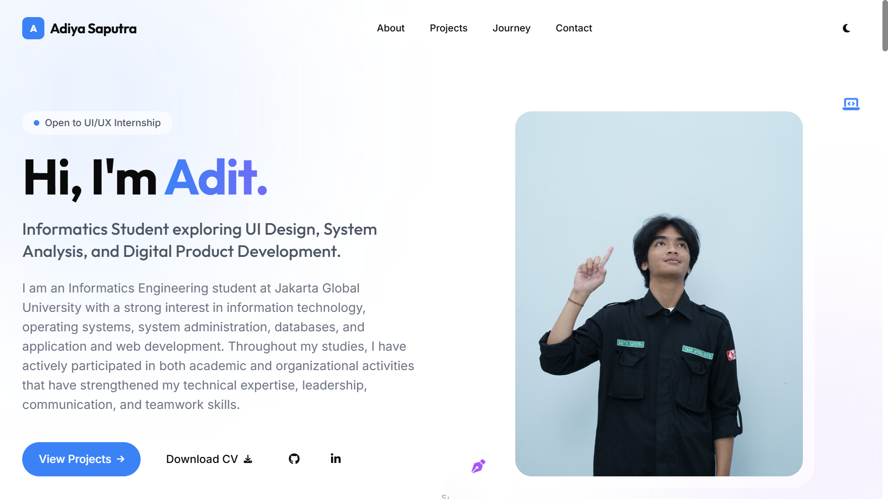
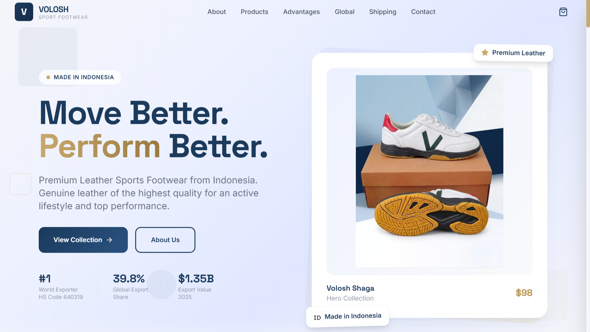
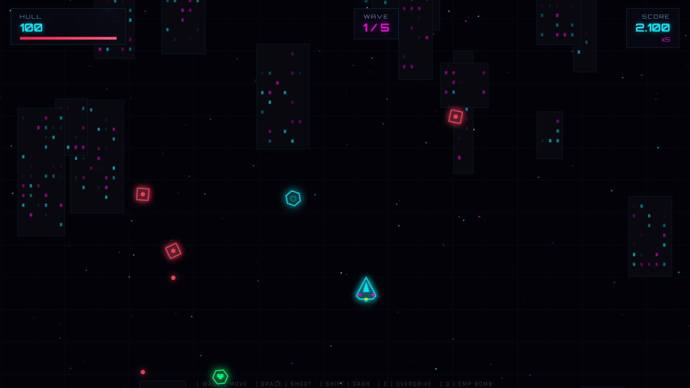
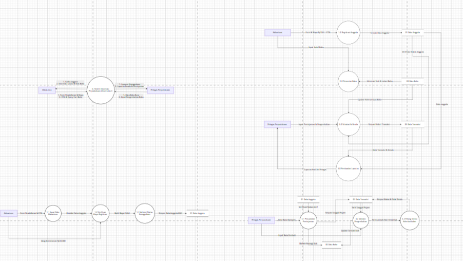
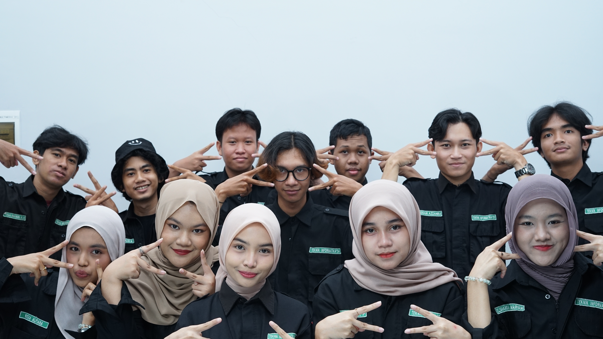
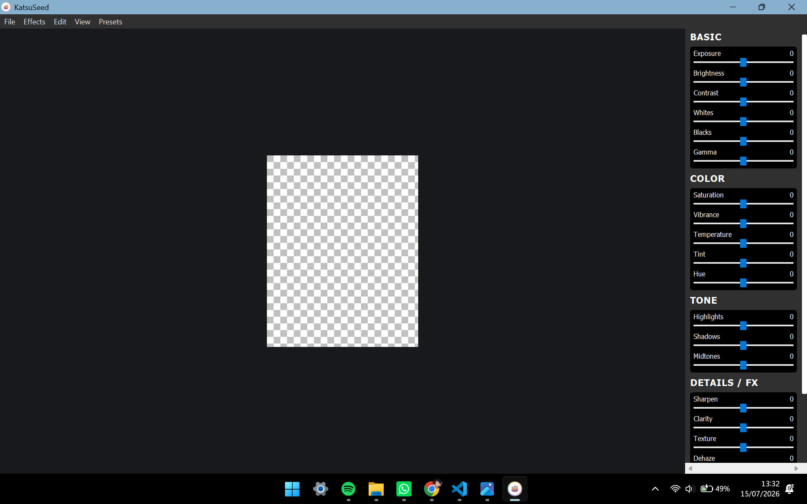
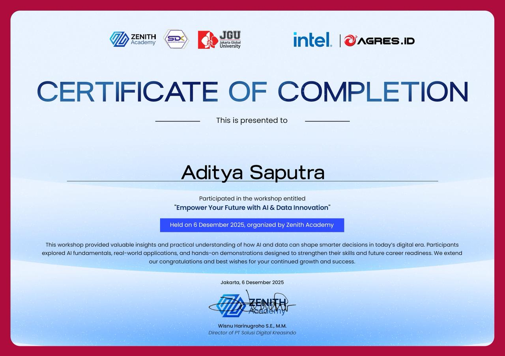
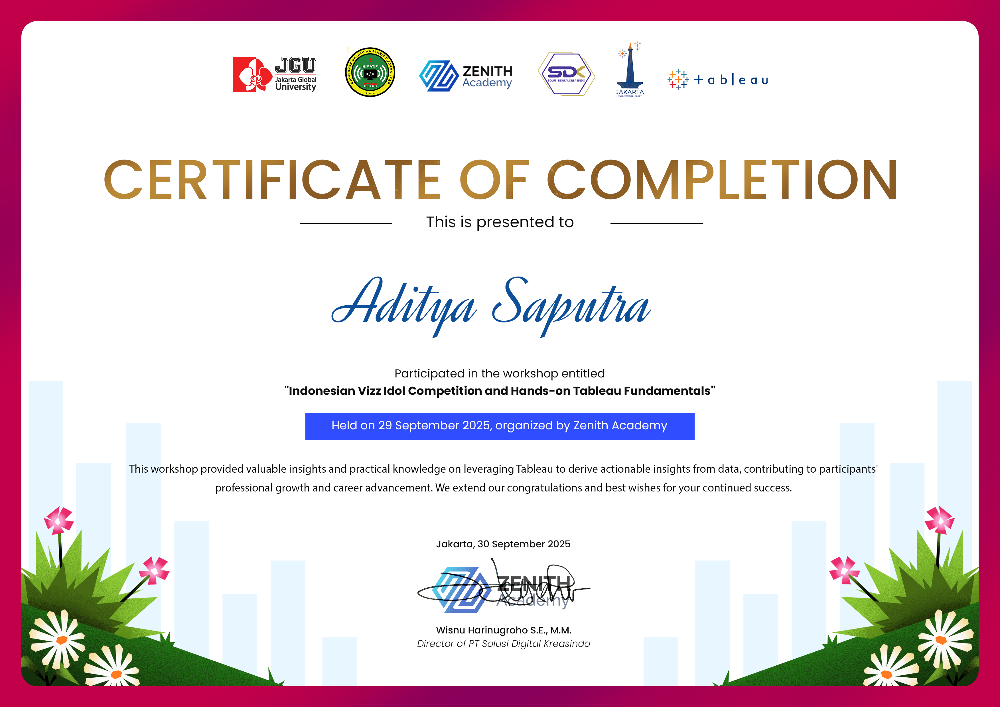

Hi, I'm Adit.
Informatics Student exploring UI Design, System Analysis, and Digital Product Development.
I am an Informatics Engineering student at Jakarta Global University with a strong interest in information technology, operating systems, system administration, databases, and application and web development. Throughout my studies, I have actively participated in both academic and organizational activities that have strengthened my technical expertise, leadership, communication, and teamwork skills.

01. About Me
A continuous learner shaping the future of digital products.
My journey in Informatics isn't just about writing code; it's about understanding how systems work and how people interact with them. I am deeply interested in the intersection of UI Design, System Analysis, and Multimedia.
I believe that great digital products are born from a mix of structured logic and creative expression. I approach problems with a curious mindset, always looking for elegant solutions that balance functionality with beautiful design.
Current Focus
Informatics Student
Building a strong foundation in computer science.
UI Design & Multimedia
Crafting visually appealing and functional interfaces.
System Analysis & Product Dev
Structuring complex systems into understandable flows.
Personal Values
Problem Solver
Creative Thinker
Fast Learner
Collaborative
Curious
Continuous Learning
02. My Journey
The road so far
2023
Graduated from SMK Prisma Depok, majoring in Computer and Network Engineering.
2024
Studying Informatics Engineering at Jakarta Global University and learning the fundamentals of programming.
2025
Continued my studies in Informatics Engineering and gained hands-on experience with various programming languages and frameworks.
2026
Building portfolio, learning UI Design, and developing interactive digital products. Seeking internship opportunities.
03. Skills
Tools & Technologies
Design
Development
Sys. Analysis
Tools
04. Featured Projects
Things I've built & designed

Personal Portfolio
Designed and developed a responsive personal portfolio website.

Volosh Footwear
Premium footwear company profile and product showcase.

Cyber Strike
HTML5 browser game featuring cyberpunk visuals.

Library System
Complete system analysis using Yourdon-DeMarco.

HIMATIF Learn Space
Digital publication assets for student org.

Katsu Photo Editor
Desktop-based image editing application developed using Python with essential photo manipulation features and an intuitive user interface.
05. My Process
How I bring ideas to life
Discover
Understanding the problem space.
Research
Gathering data and user needs.
Planning
Structuring the solution.
Wireframe
Low-fidelity layouts.
Design
High-fidelity visuals.
Development
Building the product.
Testing
Ensuring quality.
Iteration
Refining based on feedback.
Final Product
Launch and delivery.
06. Currently Learning
Growing my skillset
Design System
Accessibility
Responsive Design
Interaction Design
UI Animation
AI-assisted Workflow
07. Organization
Leadership & Teamwork
HIMATIF
Vice Head of Research and Technology Department
Responsibilities:
- Supporting department programs and initiatives.
- Managing digital initiatives for the organization.
- Designing publication materials and digital assets.
- Collaborating with committee members to achieve goals.
08. Certificates
Achievements & Learning

UTAR Certificate
Certificate of Participation

Intel Certificate
Certificate of Participation

Zenith Certificate
Certificate of Participation
09. Contact
Let's build something great
I'm currently looking for Internship opportunities. Feel free to reach out!
adityasaputraa0269@gmail.com
Resume
Download CV
GitHub
@adityaasaputraa
Aditya Saputra
@aditystraa